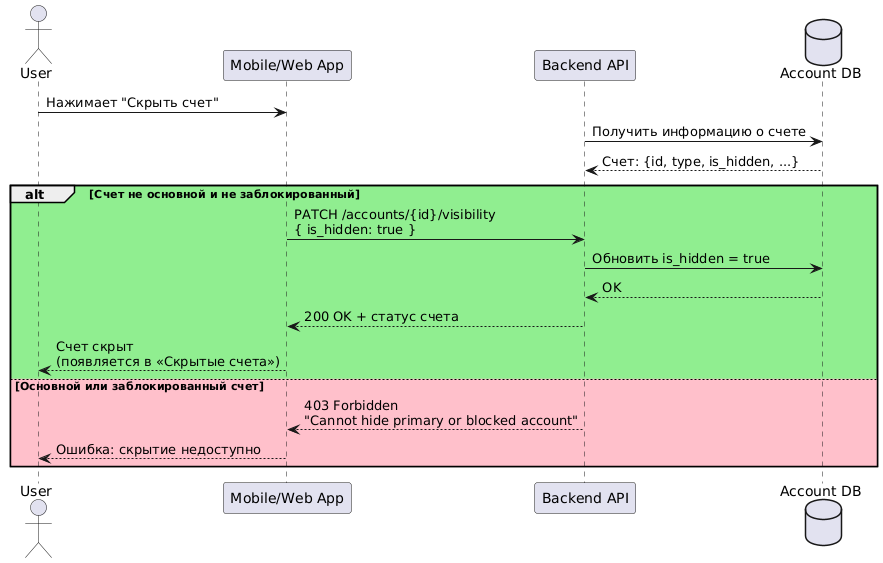
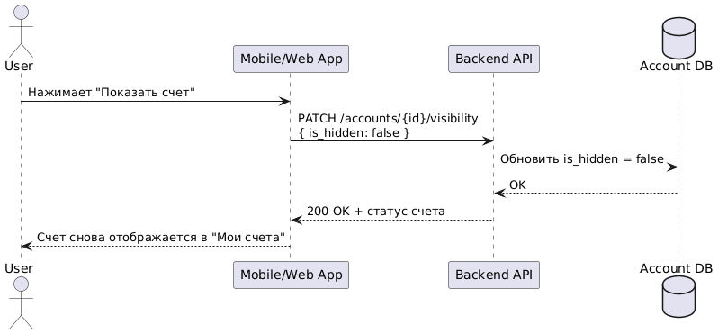

B рамках кейса были собраны и описаны требования для новой функции мобильного приложения Банка - возможности скрыть счет в личном кабинете пользователя.
Инструментарий:
| Сбор и описание требований (BRD&SRS) | Use case/User stories |
| UML | Figma |
| REST API |
Цель: повысить удовлетворенность клиентов (NPS), воспользовавшихся функцией, и снизить количество обращений в службу поддержки по вопросу скрытия счетов.
Результат: прогнозируемое повышение NPS +10% в течение 3 месяцев и снижение количества обращений -15% в течение 2 месяцев после реализации.
Краткое содержание
Описание новой функции для приложения интернет-банка: возможность скрыть счета в личном кабинете пользователя. Функция позволяет пользователю настраивать интерфейс, скрывая неактуальные счета, улучшая навигацию и восприятие личного кабинета Термины, используемые в этом документе, приведены в документе SRS по данной функции.
Цели проекта
| Цель | Метрика | Целевое значение | Срок | Мониторинг |
|---|---|---|---|---|
| Повысить удовлетворенность | NPS пользователей, использовавших скрытие | +10% к текущему уровню | Через 3 месяца после релиза | Через опросы, отзывы в приложении, контакт-центр |
| Снизить обращения | Кол-во тикетов в поддержку по отображению счетов | -15% к текущему уровню | Через 2 месяца | Через систему тикетов/td> |
История проекта
Часто клиенты открывают счета под конкретные цели: накопления, переводы, покупки. Некоторые устаревают, но не закрываются. Это приводит к перегрузке интерфейса и усложняет восприятие информации. В личном кабинете в приложении может собираться большое количество информации. Личный кабинет выглядит захламленным и неудобным для пользования.
Заинтересованные стороны
Время: по предварительной оценке команды разработки, срок реализации составляет от 2 до 4 недель при текущей загрузке. Оценка уточняется после финализации требований.
Бюджет: стоимость работы команды разработки, тестирования, внедрения в течение 1 месяца; стоимость новых требуемых мощностей
Объем проекта:
1. Реализация функции скрытия счетов из основного экрана интернет-банка.
2. Возможность возврата скрытого счета в отображение.
3. Отражение скрытого счета в отдельном списке.
Ограничения
1. У пользователя нет возможности скрыть заблокированные счета.
2. У пользователя нет возможности скрыть основной счет.
3. Скрытый счет сохраняет весь функционал активного счета, включая переводы, пополнение и просмотр истории операций, скрытие не означает блокировку счета.
User Stories:
1. Как пользователь, у которого много устаревших счетов, я хочу скрыть их из интерфейса, чтобы не тратить время на их пролистывание и не ошибиться при переводе.
2. Как пользователь, я хочу иметь возможность просмотреть скрытый счет, чтобы не потерять доступ к информации, если она мне снова понадобится.
3. Как пользователь, я хочу видеть скрытые счета в отдельной секции, чтобы при необходимости быстро восстановить отображение.
Сценарии использования:
UC-1: Скрытие счета
UC-2: Возможность просмотра скрытых счетов
UC-3: Возможность вернуть скрытый счет на основной экран (счет снова отображается в общем списке “Мои счета”)
UC-4: Ошибка при попытке скрыть основной / заблокированный счет (При попытке скрыть основной или заблокированный счет появляется уведомление с текстом «Невозможно скрыть счет» и кнопкой «ОК».)
Предварительный прототип новой функциональности:
Требования к продукту
Функциональные требования:
FR.1: Возможность скрыть отображение счета (кроме основного и заблокированного) в личном кабинете пользователя в приложении
FR.2: Возможность вернуть отображение скрытого счета
Нефункциональные требования
NFR.1: Скрытие/возврат отображения счета не должно занимать дольше 1 секунды в приложении. Отображение счета (включая скрытие/возврат) должно быть без заметной задержки при слабом интернете и в условиях высокой нагрузки на сервер.
NFR.2: Безопасность: скрытие счета не влияет на доступ к операциям, нет утечки данных.
NFR.3: Поддержка кросс-платформенности: работает на iOS и Android.
NFR.4: Надежность: Состояние скрытия сохраняется при перезапуске приложения
Критерии приемки:
CR.1: Пользователь может скрыть счет, совершив не более 3 действий: 1) нажать на карточку счета, 2) выбрать «Скрыть счет», 3) подтвердить.
CR.2: В процессе скрытия счета не происходит потери данных.
CR.3: Скрытие и восстановление счета не занимает больше 1 секунды.
План релиза:
1. Пошаговый план выпуска
2. Мониторинг после релиза
3. Поддержка в случае багов
Спецификация новой функциональности скрытия счета в мобильном приложении Банка
1. Введение
Цель документа — описать требования к разработке функциональности скрытия счетов в мобильном и веб-приложении интернет-банка. Данная возможность позволяет пользователю настраивать отображение своих счетов в интерфейсе, скрывая неактуальные или временно ненужные.
| Термин | Определение |
|---|---|
| Пользователь | Физическое лицо, клиент банка, авторизованный в приложении |
| Счет | Банковский счет пользователя |
| Основной счет | Счет, используемый по умолчанию для зачислений |
| Заблокированный счет | Счет, на который наложено ограничение (например, по судебному решению) |
| Личный кабинет | Интерфейс пользователя в интернет-банке |
2. Общее описание
Функциональность является частью мобильного и веб-приложения банка. Данные по счетам загружаются с backend-сервиса, изменения статуса "скрыт/отображается" сохраняются в БД.
3. Функциональные требования
Описание: пользователь может скрыть отображение выбранного счета в общем списке счетов, если этот счет не является основным или заблокированным.
Функциональность:
Исключения:
API-запрос: PATCH /accounts/{id}/visibility
Request: { "is_hidden": true }
Response:
| 200 OK: | { "id": "acc_12345", "is_hidden": true, "message": "Account successfully hidden" } |
| 400 Bad Request: | { "error": "Invalid account ID format" } |
| 401 Unauthorized: | { "error": "Authentication required" } |
| 403 Forbidden: | { "error": "Cannot hide primary or blocked account" } |
| 404 Not Found: | { "error": "Account not found" } |
| 500 Internal Server Error: | { "error": "Unexpected server error. Please try again later." } |
Описание: пользователь может открыть список всех скрытых счетов в разделе "Настройки счета" или отдельном экране "Скрытые счета".

API-запрос: GET /accounts?is_hidden=true
Response:
| 200 OK: | { "id": "acc_12345", "accountNumber": "40817810000001234567", "currency": "BYN", "balance": 1000.50, "isHidden": true }, { "id": "acc_67890", "accountNumber": "40817810000007654321", "currency": "USD", "balance": 500.00, "isHidden": true } |
| 400 Bad Request: | { "error": "Invalid account ID format" } |
| 401 Unauthorized: | { "error": "Authentication required" } |
| 403 Forbidden: | { "error": "Access to account information is forbidden" } |
| 404 Not Found: | { "error": "Account not found" } |
| 500 Internal Server Error: | { "error": "Unexpected server error. Please try again later." } |
Описание: пользователь может вернуть отображение ранее скрытого счета в общем списке.
API-запрос: PATCH /accounts/{id}/visibility
Request: { "is_hidden": false }
Response:
| 200 OK: | { "id": "acc_12345", "is_hidden": false, "message": "Account is now visible" } |
| 400 Bad Request: | { "error": "Invalid account ID format" } |
| 401 Unauthorized: | { "error": "Authentication required" } |
| 403 Forbidden: | { "error": "Access to account information is forbidden" } |
| 404 Not Found: | { "error": "Account not found" } |
| 500 Internal Server Error: | { "error": "Unexpected server error. Please try again later." } |
4. Нефункциональные требования
NFR.1: Производительность: Скрытие/возврат отображения счета не должно занимать дольше 1 секунды в приложении.
NFR.2: Безопасность: скрытие счета не влияет на доступ к операциям, нет утечки данных.
NFR.3: Поддержка кросс-платформенности: работает на iOS и Android.
NFR.4: Надежность: Состояние скрытия сохраняется при перезапуске приложения
5. Варианты поведения
Позитивный сценарий:
1. Пользователь нажимает "Скрыть счет"
2. Появляется сообщение: “После скрытия счет будет доступен на главной странице в разделе “Скрытые счета”.”
3. Счет перемещается в категорию “Скрытые счета”
Негативные сценарии:
1. Пользователь пытается скрыть основной счет → сообщение: “Невозможно скрыть основной счет.”
2. Пользователь пытается скрыть заблокированный счет → сообщение: “Невозможно скрыть заблокированный счет.”
3. Ошибка сервера → сообщение: “Не удалось скрыть счет. Попробуйте позже.”
6. Интерфейсы
6.1 Пользовательский интерфейс
6.2 Взаимодействие с backend
7. Дополнительная информация
7.1 User documentation:
FAQ: «Как скрыть счет»
7.2 Предположения:
7.3 Возможности масштабирования:
Функциональность скрытия может быть расширена на другие продукты (карты, вклады), используя общий механизм флага is_hidden.